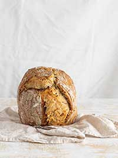

PO-TA-TOES. Boil'em, Mash'em, Make bread with'em. This recipes makes 2 loaves.
Ingredients
2 medium potatoes, peeled and quartered
2 cups water
1 tsp. granulated sugar
1/2 cup reserved warm potato water (yum)
1/4 oz. active dry yeast
2 large eggs
1 1/4 cups milk
1/2 cup butter or non-dairy alternative
2 tsp. salt
1 cup reserved mash potatoes
3 cups all-purpose flour
5 cups (approximately) all-purpose flour
2 tsp. butter or non-dairy alternative, melted, for brushing
Steps
Boil potatoes in a large pot until tender (falls off fork). Set aside 1/2 cup of cooking water. Drain and mash potatoes, set aside.
Combine sugar and dry active yesat in the reserved warm potato water. stir to dissolve and let sit 10 minutes.
I a large bowl beat eggs till frothy. Add the next 6 ingredients and yeast mixture. In stqnd mixer beat on low to moisten then beat on high until dough is smooth.
Work in the remaining flour until dough pulls away from sides of bowl. turn on to floured surface. Knead 8 to 10 minutes unitl smooth and elastic.
place dough in a greased bowl, turning once in the bowl to grease the dough surface. Cover with tea towel and let stand for 1 to 1 1/2 hours.
Punch down dough after doubled in size. divide the dough in 2 and shape into loaves.
Place the loaves into two greased 9 x 5 x 3 inch loaf pans. brush tops with melted butter, cover with tea towel, and let stand for another 30 to 40 minutes.
Bake in 375℉ (190℃) oven for 30 to 40 minutes until browned. Loaves should sound hollow when tapped. turn on to rack to cool.